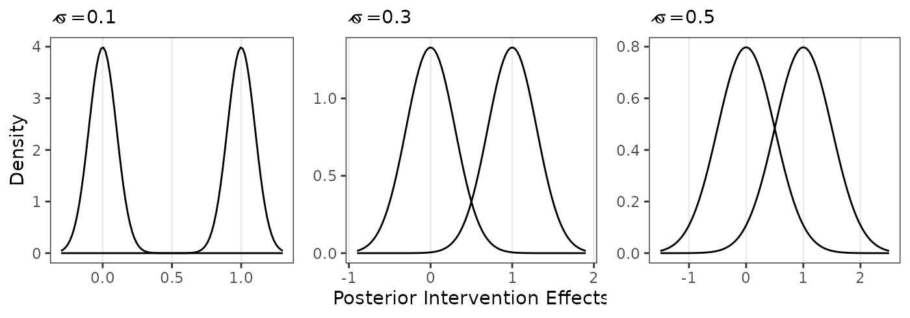
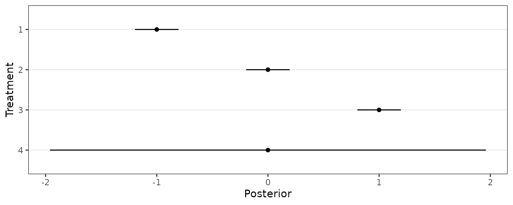
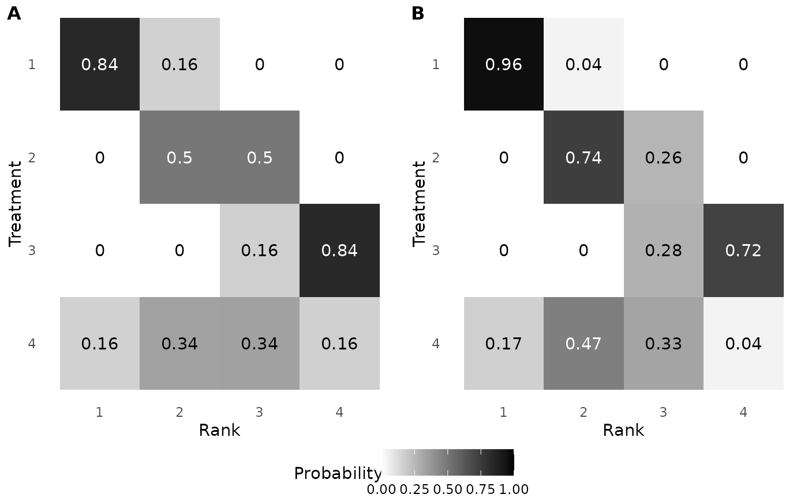
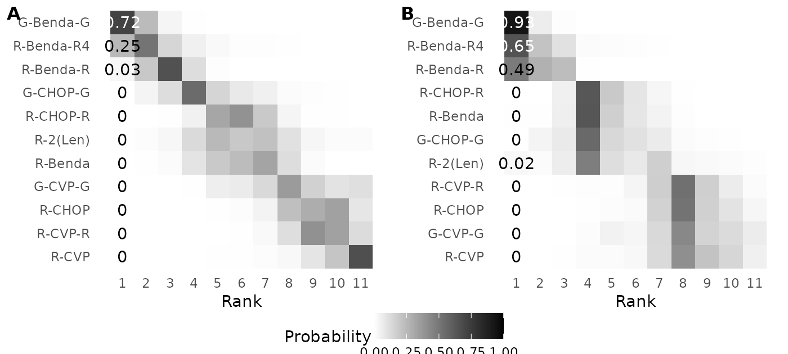
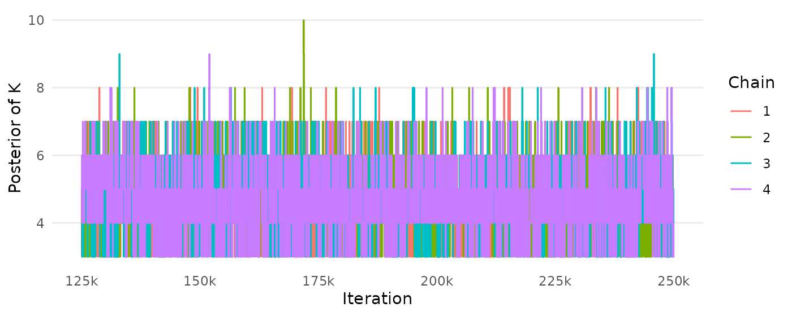

library(RaCE.NMA)
library(ggplot2)
library(dplyr)
library(cowplot)
library(gridExtra)
library(reshape2)In this vignette, we provide code to reproduce the analyses presented in the paper associated with this R package. Specifically, we reproduce two simulation studies (Sections 3.1 and 3.2) and a case study (Section 4). We assume knowledge of the associated R package functions; please refer to the “Tutorial” and “Reference” pages for more information.
Reproduction of Simulation Study 1 (Section 3.1)
The following code reproduces Figure 1.
s <- 0.1
g1a<-ggplot()+scale_x_continuous(limits=c(-3*s,1+3*s))+
stat_function(fun = dnorm, args = list(mean = 0, sd =s))+
stat_function(fun = dnorm, args = list(mean = 1, sd =s))+
theme_bw()+labs(x=" ",y="Density",subtitle=expression(hat(sigma)~"=0.1"))+
theme(panel.grid.minor = element_blank(),panel.grid.major.y = element_blank())
s <- 0.3
g1b<-ggplot()+scale_x_continuous(limits=c(-3*s,1+3*s))+
stat_function(fun = dnorm, args = list(mean = 0, sd =s))+
stat_function(fun = dnorm, args = list(mean = 1, sd =s))+
theme_bw()+labs(x="Posterior Intervention Effects",y=NULL,subtitle=expression(hat(sigma)~"=0.3"))+
theme(panel.grid.minor = element_blank(),panel.grid.major.y = element_blank())
s <- 0.5
g1c<-ggplot()+scale_x_continuous(limits=c(-3*s,1+3*s))+
stat_function(fun = dnorm, args = list(mean = 0, sd =s))+
stat_function(fun = dnorm, args = list(mean = 1, sd =s))+
theme_bw()+labs(x=" ",y=NULL,subtitle=expression(hat(sigma)~"=0.5"))+
theme(panel.grid.minor = element_blank(),panel.grid.major.y = element_blank())
grid.arrange(g1a,g1b,g1c,nrow=1)
The following code reproduces Figure 2: First, we perform a simulation study. Second, we create the figure.
## Perform simulation study
set.seed(1)
results <- matrix(NA,nrow=0,ncol=6)
for(iter in 1:20){
for(J in c(6,12,18)){
for(K in c(J/3,2*J/3,J)){
for(s in c(0.1,0.3,0.5)){
if(K==J){
ybar <- 1:K
}else{
ybar <- sample(1:K,J,replace=T)
while(length(unique(ybar))<K){ybar <- sample(1:K,J,replace=T)}
}
mcmc <- mcmc_RCMVN(ybar=ybar,s=rep(s,J),mu=mean(ybar),
sigma0=max(1,4*sd(ybar)),nu0=ybar,
tau=1,num_iters=300,nu_reps=2,chains=4, #FIX:3000
burn_prop=0.5,thin=3,suppressPrint=TRUE)
equal <- posterior_equal <- matrix(NA,nrow=J,ncol=J)
for(i in 1:(J-1)){for(j in (i+1):J){
equal[i,j] <- ifelse(ybar[i]==ybar[j],1,0) # test if treatments are truly equal in mean
posterior_equal[i,j] <- mean( # assess if treatments are rank-clustered
mcmc[,paste0("G",i)] == mcmc[,paste0("G",j)]
)
}}
results <- rbind(
results,
c(iter,J,K,s,
mean(posterior_equal[equal==1],na.rm=T),
mean(posterior_equal[equal==0],na.rm=T))
)
}
}
}
}
## Plotting results from simulation study
results <- as.data.frame(results)
names(results) <- c("Iteration","J","K","s","Prob_Clustered","Prob_Distinct")
results$s<-factor(results$s, levels=c(.1,.3,.5),
labels=c(expression(hat(sigma)~"=0.1"),
expression(hat(sigma)~"=0.3"),
expression(hat(sigma)~"=0.5")))
results$J <- factor(results$J,levels=c(6,12,18),
labels=c(expression(J~"= 6"),
expression(J~"= 12"),
expression(J~"= 18")))
results_melt <- melt(results,id.vars=1:4)
results_melt <- results_melt[!is.nan(results_melt$value),] # drop "cluster" cases when K=J
ggplot(results_melt,aes(x=factor(K),y=value,
color=factor(variable,labels=c("Rank-Clustered","Distinct"))))+
facet_grid(s~J,scales="free_x",labeller=label_parsed)+
geom_boxplot(outlier.alpha=0.5,position="identity")+theme_bw()+
scale_color_manual(values=c("skyblue","darkblue"))+
labs(x="Number of Rank-Clusters, K",
y="Posterior Rank-Clustering Probability",
color=NULL)+
theme(legend.position = "bottom",
panel.grid.minor = element_blank(),
panel.grid.major.x = element_blank())
Reproduction of Simulation Study 2 (Section 3.2)
The following code reproduces Figure 3.
J <- 4
ybar <- c(-1,0,1,0)
s <- c(.1,.1,.1,1)
set.seed(2)
data <- matrix(data = rnorm(10000*4,mean=ybar,sd=s), ncol = 4, byrow = TRUE)
create_forestplot(data = data, order_by_average = FALSE)
The following code reproduces Table 1: First, we fit the RaCE model to the simulated data. Second, we calculate and display the values in Table 1.
mcmc <- mcmc_RCMVN(ybar = ybar, s = s,
num_iters = 500, nu_reps = 2, chains = 4, #FIX:50000
burn_prop = 0.5,thin = 1,suppressPrint = TRUE)
posterior_equal <- matrix(NA,nrow=J,ncol=J)
for(i in 1:(J-1)){for(j in (i+1):J){
posterior_equal[i,j] <- mean(mcmc[,paste0("G",i)] == mcmc[,paste0("G",j)])
}}
round(posterior_equal,2)
## [,1] [,2] [,3] [,4]
## [1,] NA 0 0 0.12
## [2,] NA NA 0 0.37
## [3,] NA NA NA 0.24
## [4,] NA NA NA NAThe following code reproduces Figure 4: First, we calculate the posterior rank-clustering probability under a traditional model (i.e., assumption of distinct ranks). Second, we calculate the posterior rank-clustering probability based on the RaCE model. Third, we produce the figure.
wang_ranks <- t(apply(data,1,function(mu){rank(mu)}))
wang_ranks_probs <- apply(wang_ranks,2,function(rank){
sapply(1:J,function(j){mean(rank==j)})
})
race_ranks <- t(apply( mcmc[,paste0("mu",1:J)], 1, function(mu){
rank(mu,ties.method="min")
}))
race_ranks_probs <- apply(race_ranks,2,function(rank){
sapply(1:J,function(j){mean(rank==j)})
})
g4a<-ggplot(melt(wang_ranks_probs),
aes(x=Var1,y=factor(Var2),fill=value)) +
geom_tile() + theme_minimal() +
scale_y_discrete(limits=rev) +
scale_x_continuous(breaks=1:4,limits=c(.5,4.5)) +
scale_fill_gradient(low="white",high="black",limits=c(0,1))+
labs(x="Rank",y="Treatment",fill="Probability")+
theme(panel.grid = element_blank(),legend.position = "bottom")+
geom_text(aes(x=Var1,y=factor(Var2),label=round(value,2)),
color=ifelse(melt(wang_ranks_probs)$value>0.4,"white","black"))
g4b<-ggplot(melt(race_ranks_probs),
aes(x=Var1,y=factor(Var2,levels=paste0("mu",1:J),
labels=paste0(1:J)),fill=value))+
geom_tile() + theme_minimal() +
scale_y_discrete(limits=rev) +
scale_x_continuous(breaks=1:4,limits=c(.5,4.5)) +
scale_fill_gradient(low="white",high="black",limits=c(0,1)) +
labs(x="Rank",y="Treatment",fill="Probability")+
theme(panel.grid = element_blank(),legend.position = "bottom")+
geom_text(aes(x=Var1,y=factor(Var2,levels=paste0("mu",1:J),labels=paste0(1:J)),
label=round(value,2)),
color=ifelse(melt(race_ranks_probs)$value>0.4,"white","black"))
plot_grid(plot_grid(g4a+theme(legend.position = "none"),
g4b+theme(legend.position = "none"),
labels = c('A', 'B'), label_size = 12),
get_plot_component(g4a, 'guide-box-bottom', return_all = TRUE),
nrow=2,rel_heights = c(.9,.1) )
Reproduction of Case Study (Section 4)
We first load the posteriors from Wang et al. (2022) and calculate the mean and covariances of the relative treatment effects.
data("wang_posterior") # loads posterior of non-baseline treatments
# define assumed mean and variance for baseline treatment (R-CHOP)
ybar_baseline <- 0
var_baseline <- min(apply(wang_posterior,2,var))/10
# calculate summary statistics, ybar and cov, for all treatments
ybar <- c( ybar_baseline, apply(wang_posterior,2,mean) )
cov <- cbind( c(var_baseline, rep(0, 10) ),
rbind(0, cov(wang_posterior)) )
# store treatment names
treatments <- c("R-CHOP", names(wang_posterior))The following code chunk reproduces Figure 5.
create_forestplot(data=wang_posterior,names=treatments[-1])
Next, we fit the RaCE model to estimated relative treatment effects from Wang et al. (2022).
mcmc <- mcmc_RCMVN(ybar = ybar, cov = cov,
mu0 = mean(ybar), sigma0 = sqrt(10*var(ybar)),
num_iters = 500, nu_reps = 5, chains = 4, #FIX:50000
seed = 1, suppressPrint = TRUE)The following code chunk reproduces Figure 6, Figure 7, and Table 2: First, we calculate the values underpinning each graphic. Then, we create each in turn.
# Figure 6
g9a <- create_clustermatrix(data=cbind(0,wang_posterior),
names=treatments,label_ranks=1)+
theme(legend.position = "bottom")
g9b <- create_clustermatrix(mcmc=mcmc,names=treatments,label_ranks = 1)
plot_grid(plot_grid(g9a+theme(legend.position = "none"),
g9b+theme(legend.position = "none"),
labels = c('A', 'B'), label_size = 12),
get_plot_component(g9a, 'guide-box-bottom', return_all = TRUE),
nrow=2,rel_heights = c(.9,.1))
# Figure 7
g10a <- create_cumulativeranking(data=cbind(0,wang_posterior),names=treatments)+
theme(legend.position = "bottom") +
guides(color = guide_legend(nrow = 2))
g10b <- create_cumulativeranking(mcmc=mcmc,names=treatments)
plot_grid(plot_grid(g10a+theme(legend.position = "none"), g10b+theme(legend.position = "none"),
labels = c('A', 'B'), label_size = 12),
get_plot_component(g10a, 'guide-box-bottom', return_all = TRUE),nrow=2,rel_heights = c(.85,.15))
# Table 2
res_WANG <- calculate_SUCRA_MNBT(data = cbind(0,wang_posterior),
confidence = 0.50, names = treatments)
res_RaCENMA <- calculate_SUCRA_MNBT(mcmc = mcmc,
confidence = 0.50, names = treatments)
table2 <- left_join(res_WANG,res_RaCENMA,by="Treatment")[,c(1,2,4,3,5)]
names(table2) <- c("Treatment","SUCRA (Wang)","SUCRA (RaCE)","MNBT (Wang)","MNBT (RaCE)")
print(table2)
## Treatment SUCRA (Wang) SUCRA (RaCE) MNBT (Wang) MNBT (RaCE)
## 1 G-Benda-G 0.96674667 0.98302 0 (0, 1) 0 (0, 0)
## 2 R-Benda-R4 0.88424167 0.95020 1 (0, 1) 0 (0, 1)
## 3 R-Benda-R 0.81178500 0.92332 2 (2, 2) 1 (0, 1)
## 4 G-CHOP-G 0.66349833 0.62416 3 (3, 4) 3 (3, 5)
## 5 R-CHOP-R 0.51395000 0.62664 5 (4, 5) 3 (3, 4)
## 6 R-2(Len) 0.50069000 0.66214 5 (4, 6) 3 (3, 4)
## 7 R-Benda 0.48215000 0.63026 5 (4, 6) 3 (3, 4)
## 8 G-CVP-G 0.27813667 0.28324 7 (6, 8) 7 (7, 8)
## 9 R-CHOP 0.18591667 0.25988 8 (7, 9) 7 (7, 8)
## 10 R-CVP-R 0.15917167 0.27416 8 (8, 9) 7 (7, 8)
## 11 R-CVP 0.05371333 0.22688 10 (9, 10) 8 (7, 8)The following code chunk reproduces the Figures 8–10 (Appendix B).
createtrace_K(mcmc)+
scale_x_continuous(breaks=seq(125000,250000,by=25000),
labels=paste0(seq(125,250,by=25),"k"))
createtrace_mu(mcmc,names=treatments)+
scale_x_continuous(breaks=seq(125000,250000,by=25000),
labels=paste0(seq(125,250,by=25),"k"))
create_forestplot(mcmc=mcmc,names=treatments)